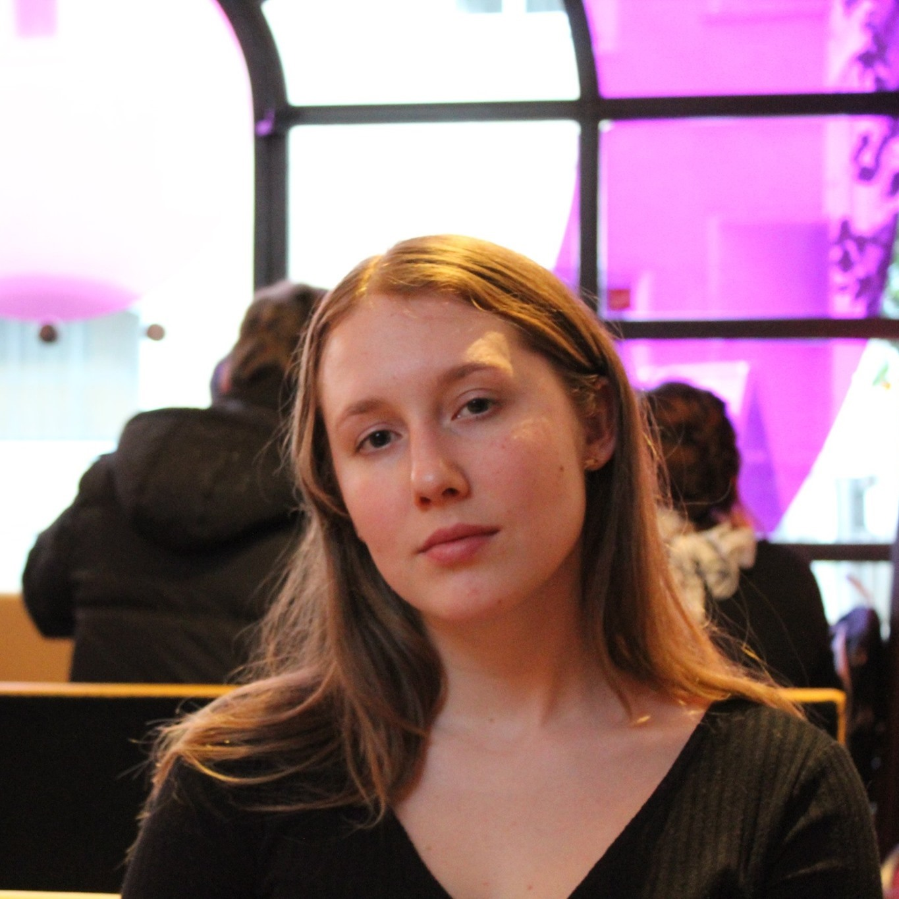
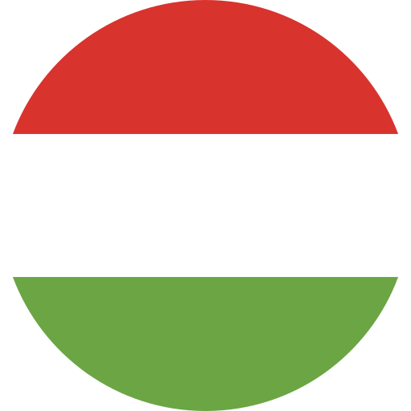

<!DOCTYPE html>
<html lang="en">
<head>
    <meta charset="UTF-8">
    <link rel="stylesheet" href="style.css" type="text/css">
    <link href="https://fonts.googleapis.com/css2?family=Roboto+Condensed:wght@300;400;700&family=Roboto:wght@100;300;400;500&display=swap"
          rel="stylesheet">
    <title>Fauszt Benedek</title>
    <script src="https://kit.fontawesome.com/3bc97c05ab.js" crossorigin="anonymous"></script>
</head>
<body>
<main class="page">
    <aside class="left">
        <section class="image-and-name">
            <section class="image">
                <div class="image-border">
                    
                </div>
            </section>
            <section class="name-and-profession">
                <header class="lined">
                    <h1 class="first-name">Fauszt</h1>
                </header>
                <h1 class="last-name">Benedek</h1>
                <h2 class="profession">Szoftverfejlesztő</h2>
            </section>
        </section>
        <section class="contact">
            <i class="header-icon fas fa-id-card-alt"></i>
            <header class="lined">
                <h3>Elérhetőség</h3>
            </header>
            <div class="info">
                <i class="fas fa-envelope"></i>
                <span>fausztb@gmail.com</span>
                <i class="fas fa-phone"></i>
                <span>+36 30 237 6664</span>
            </div>
        </section>
        <section class="aboutme">
            <i class="header-icon fas fa-info"></i>
            <header class="lined">
                <h3>Rólam</h3>
            </header>
            <p class="info">
                Szeretem azokat a kihívásokat, amikben el lehet merülni,
                így a programozás számomra nagy élményt nyújt.
                Élvezem, ha igényes munkát adhatok ki a kezemből,
                amire büszke lehetek.
                Szeretek a legapróbb részletekre is odafigyelni.
                Olyan csapatot keresek, akikkel együtt jó minőségű
                szoftvert tudunk fejleszteni, és egymást segítjük
                a szakmai fejlődésben.
            </p>
        </section>
        <section class="languages">
            <i class="header-icon fas fa-book-open"></i>
            <header class="lined">
                <h3>Beszélt nyelvek</h3>
            </header>
            <div class="info">
                <div class="language-element">
                    
                    <div class="language-details" style="grid-area: lang-1-desc">
                        <span class="lang">Angol</span>
                        <span class="level">C1</span>
                        <span class="type">Cambridge advance exam</span>
                    </div>
                </div>
                <div class="language-element">
                    
                    <div class="language-details" style="grid-area: lang-1-desc">
                        <span class="lang">Német</span>
                        <span class="level">C1</span>
                        <span class="type">DSD II.</span>
                    </div>
                </div>
                <div class="language-element">
                    
                    <div class="language-details" style="grid-area: lang-1-desc">
                        <span class="lang">Magyar</span>
                        <span class="type">Anyanyelv</span>
                    </div>
                </div>
            </div>
        </section>
    </aside>
    <aside class="right">
        <section class="experience">
            <i class="header-icon fas fa-suitcase"></i>
            <header class="lined">
                <h3>Szakmai tapasztalat</h3>
            </header>
            <div class="info">
                <div class="exerience-element">
                    <div class="organization">Dual Systems Hungary Kft</div>
                    <div class="interval">2019 Június - folyamatban</div>
                    <div class="job-title">Java fejlesztő</div>
                    <div class="description">
                        <p>JavaEE alapon fejlesztetek egy vállalatirányítási renszrert egy agilis csapatban.</p>
                        <div class="skills">
                            <span class="label">Használt technológiák</span>
                            <i class="fas fa-database"></i>
                            <span>Oracle<br>database</span>

                            
                            <span>Maven</span>

                            <i class="fas fa-database"></i>
                            <span>JPA</span>

                            
                            <span>Jira</span>

                            
                            <span>JSF</span>

                            
                            <span>Glassfish</span>
                        </div>
                    </div>
                </div>
                <div class="exerience-element">
                    <div class="organization">Iskolai és szabadidős projekt</div>
                    <div class="interval">2020 Január - folyamatban</div>
                    <div class="job-title">Backend és android fejlesztő</div>
                    <div class="description">
                        <p>
                            Egy többnyelvű szótár applikációt fejlesztünk egy diáktársammal.
                            Én csinálom a backendet és az android klienst.
                        </p>
                        <div class="skills">
                            <span class="label">Használt technológiák</span>

                            
                            <span>Kotlin</span>

                            
                            <span>Gradle</span>

                            
                            <span>RxKotlin</span>

                            
                            <span>Spring</span>

                            
                            <span>MySQL</span>
                        </div>
                    </div>
                </div>
            </div>
        </section>
        <section class="education">
            <i class="header-icon fas fa-graduation-cap"></i>
            <header class="lined">
                <h3>Tanulmányok</h3>
            </header>
            <div class="info">
                <div class="exerience-element">
                    <div class="organization">BME</div>
                    <div class="interval">2017 - várhatóan 2020 december</div>
                    <div class="job-title">Mérnökinformatikus Bsc</div>
                    <div class="description">
                        Budapesti Műszaki és Gazdaságtudományi Egyetem
                        <br>
                        Villamosmérnöki és Informatikai Kar
                    </div>
                </div>
                <div class="exerience-element">
                    <div class="organization">Hunfalvy János SZG</div>
                    <div class="interval">2011 - 2016</div>
                    <div class="job-title">Középiskola</div>
                    <div class="description">
                        Kétnyelvű német-magyar gazdasági végzettség
                    </div>
                </div>
            </div>
        </section>
        <section class="skills">
            <i class="header-icon fas fa-user"></i>
            <header class="lined">
                <h3>Képességek</h3>
            </header>
            <div class="info">
                <ul>
                    <li>
                        <div class="title">Programozás</div>
                        <div class="circle-border value-10">
                            <div class="circle">10</div>
                        </div>
                        <div class="description">
                            Sok nyelvet használtam már (Java, Python, C++, Kotlin, TypeScript),
                            kedvencem eddig a Kotlin.
                        </div>
                    </li>
                    <li>
                        <div class="title">Szoftvertesztelés</div>
                        <div class="circle-border value-7">
                            <div class="circle">7</div>
                        </div>
                        <div class="description">
                            Egyelőre még csak Java kódhoz írtam főleg Unit-
                            vagy integrációs teszteket.
                        </div>
                    </li>
                    <li>
                        <div class="title">Webfejlesztés</div>
                        <div class="circle-border value-9">
                            <div class="circle">9</div>
                        </div>
                        <div class="description">
                            Html, Css(Scss), Js, JQuery
                        </div>
                    </li>
                    <li>
                        <div class="title">Relációs adatbázisok</div>
                        <div class="circle-border value-10">
                            <div class="circle">10</div>
                        </div>
                        <div class="description">
                            Dolgoztam már Oracle-lel, MySQL-lel, MsSQL-lel.
                            Sokszor írtam már migrációs szkripteket, főleg Oracle PL/SQL-ben.
                        </div>
                    </li>
                    <li>
                        <div class="title">Android</div>
                        <div class="circle-border value-8">
                            <div class="circle">8</div>
                        </div>
                        <div class="description">
                            Natív alkalmazások androidra. Írtam alkalmazást Javaban és Kotlinban is.
                        </div>
                    </li>
                    <li>
                        <div class="title">User experience</div>
                        <div class="circle-border value-8">
                            <div class="circle">8</div>
                        </div>
                        <div class="description">
                            Mindig nagy figyelmet fordítok a felhasználói élményre.
                        </div>
                    </li>
                </ul>
            </div>
        </section>
    </aside>

</main>

</body>
</html>
